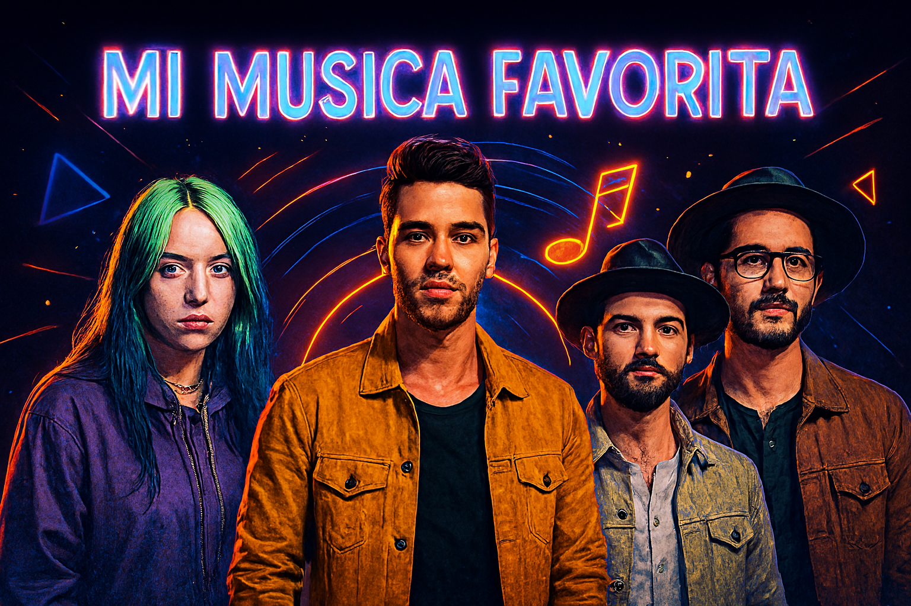

Morat
Morat es una banda colombiana de pop latino conocida por sus letras románticas y su estilo único. Sus canciones conectan con emociones profundas y son muy populares. Aquí puedes ver uno de sus videos:
Ver en Spotify
¡Hola! Soy Manuela Briones y esta es mi página personal dedicada a mi pasión por la música. La música forma parte de mi vida diaria, me acompaña en diferentes momentos y refleja mi estado de ánimo. Aquí podrás conocer mis artistas favoritos, descubrir canciones que escucho frecuentemente y calificar mi playlist según tu opinión. También puedes recomendarme nuevas canciones usando el formulario. Este proyecto está inspirado en Spotify y fue creado como parte de mi aprendizaje en desarrollo web.
Morat es una banda colombiana de pop latino conocida por sus letras románticas y su estilo único. Sus canciones conectan con emociones profundas y son muy populares. Aquí puedes ver uno de sus videos:
Reik es una banda mexicana de pop latino reconocida por sus canciones románticas y emotivas. Su música combina pop y baladas que han marcado a muchas generaciones. Aquí puedes ver uno de sus videos musicales más representativos:
Dúo mexicano reconocido por sus canciones emotivas y su gran talento vocal. Aquí puedes ver uno de sus videos musicales:
Califica cada canción seleccionando las estrellas: